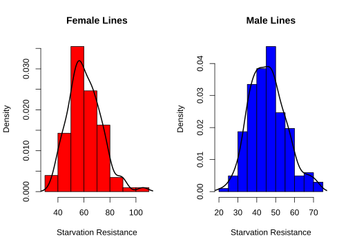
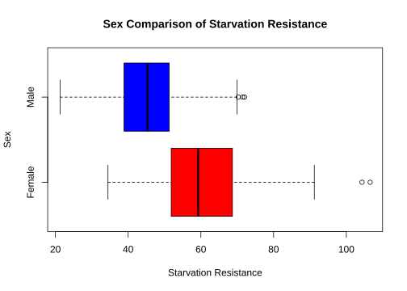
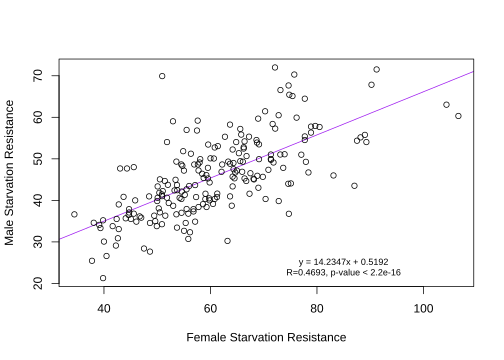
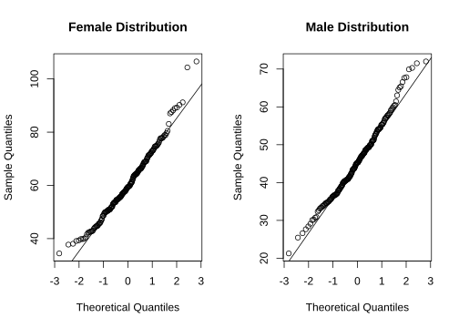
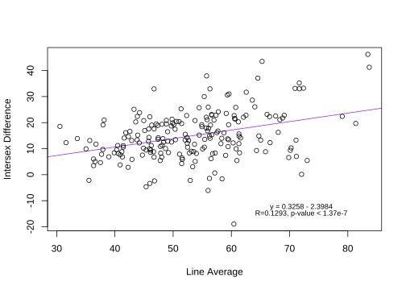

Last updated: 2022-11-08
Checks: 6 1
Knit directory: dgrp-starve/
This reproducible R Markdown analysis was created with workflowr (version 1.7.0). The Checks tab describes the reproducibility checks that were applied when the results were created. The Past versions tab lists the development history.
The R Markdown file has unstaged changes. To know which version of the R Markdown file created these results, you’ll want to first commit it to the Git repo. If you’re still working on the analysis, you can ignore this warning. When you’re finished, you can run wflow_publish to commit the R Markdown file and build the HTML.
Great job! The global environment was empty. Objects defined in the global environment can affect the analysis in your R Markdown file in unknown ways. For reproduciblity it’s best to always run the code in an empty environment.
The command set.seed(20221101) was run prior to running the code in the R Markdown file. Setting a seed ensures that any results that rely on randomness, e.g. subsampling or permutations, are reproducible.
Great job! Recording the operating system, R version, and package versions is critical for reproducibility.
Nice! There were no cached chunks for this analysis, so you can be confident that you successfully produced the results during this run.
Great job! Using relative paths to the files within your workflowr project makes it easier to run your code on other machines.
Great! You are using Git for version control. Tracking code development and connecting the code version to the results is critical for reproducibility.
The results in this page were generated with repository version 22502a7. See the Past versions tab to see a history of the changes made to the R Markdown and HTML files.
Note that you need to be careful to ensure that all relevant files for the analysis have been committed to Git prior to generating the results (you can use wflow_publish or wflow_git_commit). workflowr only checks the R Markdown file, but you know if there are other scripts or data files that it depends on. Below is the status of the Git repository when the results were generated:
Ignored files:
Ignored: analysis/.RData
Ignored: analysis/.Rhistory
Untracked files:
Untracked: code/baseScript-lineComp.R
Untracked: code/combineSNP.R
Untracked: code/four-comp.76979.err
Untracked: code/four-comp.76979.out
Untracked: code/four-comp.sbatch
Untracked: code/line_avgMinus.R
Untracked: code/line_avgPlus.R
Untracked: code/line_difMinus.R
Untracked: code/line_difPlus.R
Untracked: data/avgMinus-result.txt
Untracked: data/avgPlus-result.txt
Untracked: data/difMinus-result.txt
Untracked: data/difPlus-result.txt
Untracked: data/snpList.txt
Untracked: output/avgMinus-result.txt
Untracked: output/avgPlus-result.txt
Untracked: output/difMinus-result.txt
Untracked: output/difPlus-result.txt
Unstaged changes:
Modified: analysis/starve.Rmd
Deleted: code/line_comp.R
Deleted: code/stat-methods.R
Modified: jobs/line_comp.sbatch
Note that any generated files, e.g. HTML, png, CSS, etc., are not included in this status report because it is ok for generated content to have uncommitted changes.
These are the previous versions of the repository in which changes were made to the R Markdown (analysis/starve.Rmd) and HTML (docs/starve.html) files. If you’ve configured a remote Git repository (see ?wflow_git_remote), click on the hyperlinks in the table below to view the files as they were in that past version.
| File | Version | Author | Date | Message |
|---|---|---|---|---|
| Rmd | 41de4a8 | nklimko | 2022-11-08 | difMinus success, reframe for all four genotype analysis |
| html | 41de4a8 | nklimko | 2022-11-08 | difMinus success, reframe for all four genotype analysis |
| Rmd | d2abea6 | nklimko | 2022-11-05 | 11/5 Phase plan, data prep/analysis nested steps and pseudo for script |
| html | d2abea6 | nklimko | 2022-11-05 | 11/5 Phase plan, data prep/analysis nested steps and pseudo for script |
| Rmd | d0a5cb1 | nklimko | 2022-11-05 | Baseline analysis 11/5, horrendous formatting |
The analysis begins with the data files prepared in Phase 1. MAKE THIS LINK TO DATA PREP. The goal of these steps was to visually characterize the data and form the basis for groupings of DGRP lines for further analysis.
 First impressions on histograms are that both are unimodal with light skew to the right.
 Plotting the distributions on the same axis gives a more accurate representation of distribution between sexes. The average female has a much greate starvation resistance of 60.665 compared to the average male 45.732. Outliers to the right of both boxplots indicate right skew.
 The trendline is a Simple Linear Regression ‘reg=lm(y~x)’ with R and p values extracted from summary statistics. The slope indicates a positive correlation between male and female starvation resistance while the R value of 0.4693 indicates that the correlation is not close to linear.

There is some systematic deviation from linearity on both tails in Females and on the upper tail in Males. Eyeballing is not an exhaustive measure of discerning normality. Quantitative methods are needed:
The Shapiro-Wilk method was chosen as it retains the best power
The test statistic formula is: \[ W = \frac{(\sum_{i=1}^{n}a_ix_{(i)})^{2}}{\sum_{i=1}^{n}(x_i-\overline x)^{2}} \]
More about the Shapiro-Wilk test statistic can be found here.
\(W\) values closer to 1 indicate normality, with \(W = 1\) being perfectly normal.
Shapiro-Wilk normality test
data: Female_Starvation
W = 0.97662, p-value = 0.001826
Shapiro-Wilk normality test
data: Male_Starvation
W = 0.98745, p-value = 0.07023At an \(\alpha\) level of 0.05, we have sufficient evidence to reject that the Female population is normally distributed as p < \(\alpha\) (0.001826 < 0.05).
At an \(\alpha\) level of 0.05, we do not have sufficient evidence to reject that the Male population is normally distributed as p > \(\alpha\) (0.07023 > 0.05). Notably the correlation is not strong as the p-value is close to 0.05.
The two groups of interest were extreme values on both ends.

Along with this, I wanted to look at the highest and lowest averages. Twenty lines from the top and bottom were partitioned for further analysis. With these four groups, I sought to look for difference in genotype and fold-change in gene expression hereLINK to PHASE ??? not sure yet
sessionInfo()R version 4.0.3 (2020-10-10)
Platform: x86_64-pc-linux-gnu (64-bit)
Running under: CentOS Linux 7 (Core)
Matrix products: default
BLAS/LAPACK: /opt/ohpc/pub/Software/openblas_0.3.10/lib/libopenblas_haswellp-r0.3.10.dev.so
locale:
[1] LC_CTYPE=en_US.UTF-8 LC_NUMERIC=C
[3] LC_TIME=en_US.UTF-8 LC_COLLATE=en_US.UTF-8
[5] LC_MONETARY=en_US.UTF-8 LC_MESSAGES=en_US.UTF-8
[7] LC_PAPER=en_US.UTF-8 LC_NAME=C
[9] LC_ADDRESS=C LC_TELEPHONE=C
[11] LC_MEASUREMENT=en_US.UTF-8 LC_IDENTIFICATION=C
attached base packages:
[1] stats graphics grDevices utils datasets methods base
other attached packages:
[1] dplyr_1.0.8
loaded via a namespace (and not attached):
[1] Rcpp_1.0.8.3 highr_0.9 pillar_1.7.0 compiler_4.0.3
[5] bslib_0.3.1 later_1.3.0 jquerylib_0.1.4 git2r_0.30.1
[9] workflowr_1.7.0 tools_4.0.3 digest_0.6.29 jsonlite_1.8.0
[13] evaluate_0.15 lifecycle_1.0.1 tibble_3.1.6 pkgconfig_2.0.3
[17] rlang_1.0.4 DBI_1.1.2 cli_3.3.0 rstudioapi_0.13
[21] yaml_2.3.5 xfun_0.30 fastmap_1.1.0 stringr_1.4.0
[25] knitr_1.38 generics_0.1.2 fs_1.5.2 vctrs_0.4.1
[29] sass_0.4.1 tidyselect_1.1.2 rprojroot_2.0.3 glue_1.6.2
[33] R6_2.5.1 fansi_1.0.3 rmarkdown_2.16 purrr_0.3.4
[37] magrittr_2.0.3 whisker_0.4 promises_1.2.0.1 ellipsis_0.3.2
[41] htmltools_0.5.2 assertthat_0.2.1 httpuv_1.6.5 utf8_1.2.2
[45] stringi_1.7.6 crayon_1.5.1